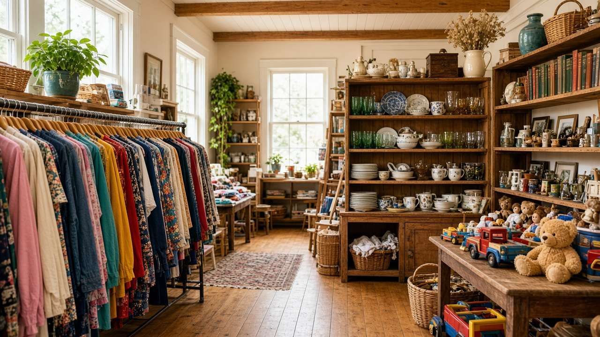

Consignment Shoppe · Sunrush Plaza, across from Goodwill · Chillicothe, Ohio

Sample photoconsignors, and many have been with the shop since the day it opened.
“We carry just about anything,” from baby clothes to 6XL, dishes, decor, toys, books and games. Stock turns over as consignors bring in new things.
The shop takes consignment intake. Email or text before you bring items in to ask what's being accepted right now.
2530 Western Avenue
Chillicothe, OH 45601
Mon, Tue, Thu, Fri, Sat · 9 AM–5 PM
Email pwhitten5134@yahoo.com
Text (740) 772-2330